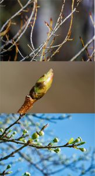

Last month, we talked about how conifers survive the winter without losing their leaves. For deciduous trees, that do lose their leaves, wintertime is a time of dormancy. Leaves fall off, growth ceases, and energy is conserved. Even though trees without their leaves appear to be dead, that, in fact, is not the case. They are very much alive and using minimal resources to survive the winter and prepare for spring. Although the level of energy is greatly decreased, trees are still burning fuel to continue to thrive making the time they wake-up from dormancy a crucial timing. When spring arrives, these trees are ready to wake up and begin to bud. As a company that provides tree service in Monmouth County, there are a lot of things that tell us when it’s spring, but how do trees know? Let’s find out.
Here’s Some Reasons That Aren’t the Case
It might seem simple enough to figure out how trees know it’s spring. The truth is that the answer may surprise you.
One theory could be that there is a designated amount of time that trees spend in dormancy. Then, once the alarm goes off, they wake up. If this were true, every tree would begin to bud on the same day every spring. We all know this is not the case.
Another option you might think may be true is that trees know when to stop being dormant when temperatures begin to warm. But, if this were the case, most trees would probably perish every spring. Due to varying ranges of temperatures in winter, especially when it comes to the weather as it pertains to tree service in Monmouth County, trees can see days of over 50°F followed by days that are well below freezing. Luckily, a few warm days are not the clue that trees are waiting for.
The Cold is the Key
The real way that trees know when to cease dormancy is actually a combination of the two. Trees do use a time sensitive method and it does relate to temperature, but not in the way you might assume. It’s the frigid temperatures that are the key. The truth is that trees keep track of how many days of cold temperatures they have sustained. Only after they have reached a certain amount of cold time followed by warmer weather do they know that it is time to begin to bud. This is how they are not fooled by random warm days during winter. Every region and each species have their own calendar. This is why you see some trees bud in early spring versus others that wait until the end of spring.

Spring is a Busy Time for Tree Service in Monmouth CountyTree companies in Monmouth County, Ocean County, and all over where cold weather exists, have a different identifier that spring has sprung. The steep increase of jobs is an obvious indication that trees have begun budding. Part of this is just a pure matter of human nature. As temperatures rise, people spend more time outside. We all become much more likely to observe what is going on with our yards at this time. The more you are outside and looking at your trees, the quicker you call to schedule your tree service in Monmouth County. Trees dormancy cycle is also why it is so important to only plant trees during appropriate seasons depending on species and region. Planting a tree when they will only have the chance to experience half their dormancy will almost guarantee that tree will not make it.
Hiring a professional arborist for tree service in Monmouth County is important for your trees and important for you. Protect yourself and your property by having tree trimming and removal done only by licensed and insured tree companies like us. Contact us today if you need tree service in Monmouth County.